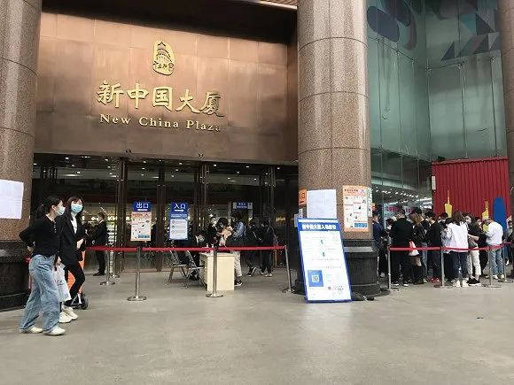
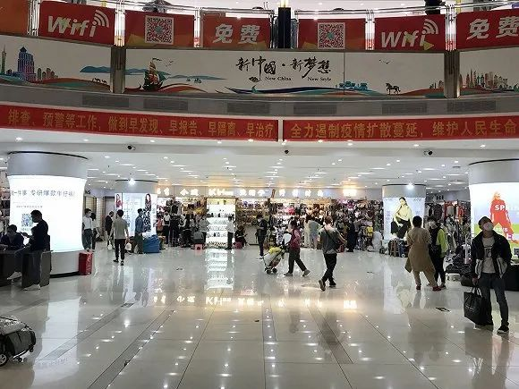
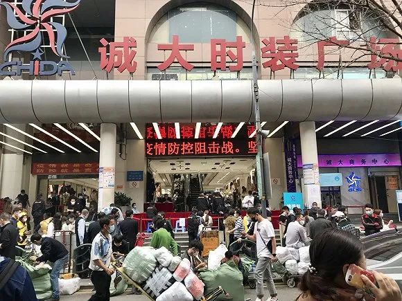
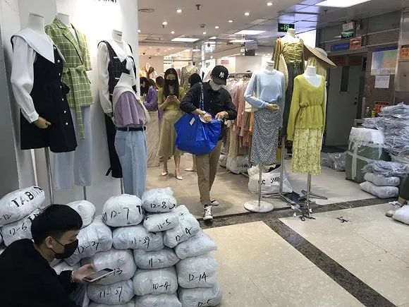
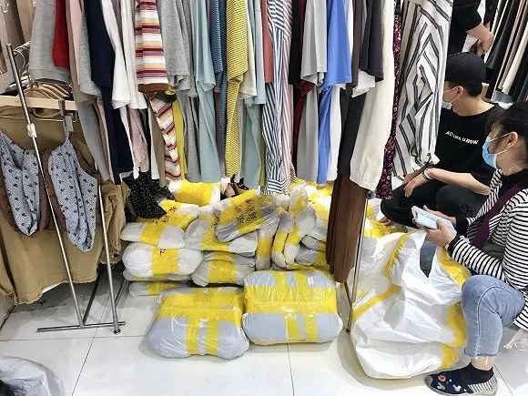
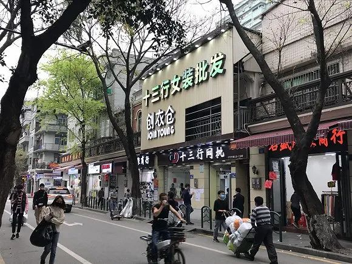

“华南海鲜批发市场西区有十几家贩卖野味的商户”|对话武汉肺炎当事人–专题-中国经营网
原文链接 备份链接 “华南海鲜批发市场西区有十几家贩卖野味的商户”|对话武汉肺炎当事人 2020-01-22 20:16 作者：张家振 陈婷 来源：中国经营网 本报记者 张家振 陈婷 武汉、北京报道 “新型冠状病毒的来源是武汉一家海鲜市场 …

记者：吴容
编辑：牙韩翔
“
因为疫情，中国最大的服装批发市场之一广州十三行生意惨淡。但在疫情之外，它的模式也正在受到冲击。
”
等了一个月，伍鹏飞终于回到了自己在广州十三行的服装档口。
广州作为中国最大的服装批发地，以往包括十三行、沙河、白马、红棉等批发商圈在元宵左右开工。而受到疫情影响，今年复市时间一再延迟，直到3月5日才先后迎客。
十三行虽是其中较早复市的一个，伍鹏飞觉得还是迟了。
过年后的2-4月是服装批发的交易旺季，延迟开工和人流量大减，使得春季销售机会少了三分之一。伍鹏飞年前几十万的女装备货可能变成卖不动的“压箱货”，收不回货款又意味着无法进新货，夏季销售如何开展也成问题。

十三行规模最大的商城新中国大厦复市，进场需进行体温检测。图片来源：吴容
如此连锁反应，伍鹏飞不敢继续往下细想。眼下，他和大多数商户只想争取减租或免租，而这也成为了开市后遇到最为头疼的事。
十三行商圈位于广州荔湾区，短短400米左右的十三行路两旁，以新中国大厦、诚大时装广场和红遍天大厦为龙头，遍布了大小几十家商城，商户超过6000家。

新中国大厦一楼。图片来源：吴容
其中，新中国大厦最为出名、规模最大，相应的租金也最高。伍鹏飞的档口位于新中国大厦，他透露，按照面积大小的不同，月租一般从6万到30万元不等。
开工之初，新中国大厦并非没有宣布部分减租、免租政策，但伍鹏飞觉得，政策总体而言比较有限，不同楼层有不同标准。不过，政策针对的是档主，作为个体商户很大程度无法享受。

3月4日，新中国大厦微信公号推送租金减免通知。
所谓档主，指的是承租户。钟冬英在十三行一家商铺咨询中心工作，根据她的介绍，新中国大厦大部分楼层按照五年合同出租给承租户，由于一手承租户租赁时间比较长，往往对外出租谋利，也就产生了二手房东。他们会进行改造，并划分成密密麻麻的档口租给商户们。
“有些档口其实就是格子店，两块砖的大小，不到1平方米，每月租金最少要价6万。交租方式各有不同，比较轻松的是押二付一、押三付一，也听说过按半年、一年交的。”伍鹏飞说。

新中国大厦内部的“格子店”。图片来源：吴容
减租、免租政策无法享受，和房东多次商量无果后，伍鹏飞向熟悉的几家商户打听，反馈也基本和他类似，“有的说晚点看看其它房东怎么处理，有的说找商场管理处咨询，有的很久不回复微信，打电话也不接。”焦虑的商户们开始拉微信群讨论维权对策，纷纷提出“2月免租、3月4月租金减半”的诉求。
直到3月8日，新中国大厦微信公众号向全体商户推送了以”疫情当前，守法奉行”的公告，并表示会协助商户回到正常经营轨道上。对于存在二手转租商户的情况，3月17日，新中国大厦再次出台了相应政策，称将优惠方案落实到终端商户上。

3月17日，新中国大厦再次出台政策，称将优惠方案落实到终端商户上。
截止目前，伍鹏飞了解到，有的商户已拿到了部分租金退款，有的依旧协商无果。“因为，不仅有二手房东，部分楼层可能有三手房东，通过层层倒手赚差价，这个环节中只要任意一个房东不减租，商户都无法指望拿到退款。”
事实上，除了租金高企外，传统服装批发市场逐渐开始式微。不止十三行，广州沙河、白马、红棉，以及武汉汉正街等批发市场的生意早已不如从前。
上世纪90年代，服装批发兴起。这个行业最初以地摊、大棚经营为代表，慢慢地，商户们进入商城，统一管理之下也逐步正规化，千禧年后迎来繁荣发展。
十三行商圈在鼎盛时期，人流量可达到数十万人，每天进出货物数千吨，通过物流发到全国各地市场。服装业流传着这样的说法，“中国80%服装来自广东，广东服装80%来自广州，广州服装80%来自十三行”。

新中国大厦旁边的诚大时装广场。图片来源：吴容
伍鹏飞明显感觉到批发市场走下坡路是在2014年年底。电商经过10年来发展，在那时迅猛爆发，大家开始网购衣服。最直接影响是线下服装店。
“而下游货不好卖，最终影响的是我们上游批发市场。”按照伍鹏飞说法，电商至少分流了十三行超过三分之一的客流。
与此同时，互联网的冲击，使得批发市场交易价格变得公开透明，让批发商们失去了盈利空间。
这些下游批发商的商业模式主要是“炒货”。包括十三行在内的批发市场，部分商户通常没有工厂资源，他们通过“炒货”，从一个更低价的批发商手中买货，再倒卖给下家批发商。
但电商打击了这种赚钱方式。过去淘宝店主会从批发市场进货，现在他们纷纷跨过批发商，和工厂直接对接下单，导致十三行商户利润又被压缩。

十三行路旁物流点。图片来源：吴容
同时，传统批发市场自身模式特点，放在现在也使得其发展变得举步维艰。
从事服装买手工作的黄小琴表示，批发市场早年选址一般在城市核心地段或者靠近交通枢纽。比如，十三行所处的荔湾区是广州的老城区，也是曾经的核心商圈。而白马、天马、流花服装广场等靠近广州火车站、汽车总站。这些年来地价普遍上涨，核心地带租金更是涨得厉害，黄小琴形容为“卖衫不如炒铺”。
而同质化问题也颇为严重。
黄小琴熟悉的十三行和沙河市场，两者服装定位中低端，款式同质化更为明显，互相仿版、设计原创氛围很差。
比如一款一字肩女上衣成为爆款后，厂家和商家一窝蜂跟进。商家们只能不停降价竞争、打价格战，等到这件爆款利润价值被压榨得差不多之后，又转向新的爆款，就逐渐变成了恶性循环。

十三行服装通过物流发往全国各地。图片来源：吴容
面对困境，商户们并非没有考虑过转型，最直接的路径是“触电”，但并不容易。“做电商找死，不做电商等死”成为了他们常挂在嘴边的话。
伍鹏飞观察，十三行商户现状有几种：一部分商户尽管生意不如从前，但由于未被逼到绝境，所以仍是侥幸得过；一部分尝试起“一件代发”业务，过往在十三行拿货都要5-10件起批；另一部分商户在转型上心有余力不足。
如果商户依赖抖音等直播卖货，要把直播号做成企业号运营，事实上成本并不小。首先要向平台交纳一部分费用，直播时加产品链接、吸粉、刷流量、刷广告等，通通也要花钱，平台也会根据销售额抽成。
“一般来讲，没有前期两到三年的铺垫和投入，直播很难做起来，一些商户没坚持下去，中途就放弃了。”伍鹏飞说。


商户们正在打包发货。图片来源：吴容
而相比杭州四季青批发市场的转型，十三行还是没有把握住直播红利。
“如果说网红孵化带货，十三行很明显打不过杭州那边。”黄小琴对界面新闻说，“杭州网红经济在2017年左右已成规模，你会发现很多大家叫得出名字的网红都来自江浙沪一带，如果不想简单地跟热点，而是造热点，是需要依赖网红，即便不是头部网红，也要是腰部的。”
“而且在网批市场的打造，广州这边并不多。”据黄小琴的了解，在杭州，四季青以原有市场为基础，打造了一系列线下网批市场如四季星座、四季青电商基地、九堡新四季青市场等。在当地政策、网红孵化和直播带动下，四季青线下批发业务与线上批发的比重已变成4：6，2015年该比例为6：4。

十三行网批市场打造不及杭州四季青。图片来源：吴容
遭遇疫情影响，四季青同样推迟了开市时间，3月10日一开市，更多主播和档口店员参与到直播行列之中，通过线上渠道消化春装库存。四季青商户林煜盛接受媒体采访时表示，“上周六，淘宝直播专门开了个四季青档口主播专场，听说当天至少有五十名新主播加入。”
作为源头产地复苏计划之一，广州十三行商会也将联合阿里1688平台在3月28日推出“十三行直播专场”，宣称平台上线零门槛，让商家不用开网店，就可以把展厅搬到线上。据阿里巴巴的数据，2月以来，阿里1688平台的“商+直播”入驻的商家同期增长了87%。
不过目前这些都仍然只是尝试阶段，对于伍鹏飞这样的个体商户而言，他们最希望看到的还是生意恢复如初，然后再思考着转型的方向。
在清朝，广州作为唯一通商口岸，十三行以“洋货行”享誉海外，吸引世界各地的人来此经商。百年后，十三行又成为了中国服装批发市场中重要的一部分，但发展至今陷入迷茫，十三行未来走向如何成为大家关心的问题。
“会像北京动批那样搬迁去周边城市，还是会进行改造升级拿到互联网船票？这都是未知数。”伍鹏飞还在怀念着，那个数十万操着不同口音的批发商在此穿梭流动、属于十三行的黄金年代。
未经授权 禁止转载

原文链接 备份链接 “华南海鲜批发市场西区有十几家贩卖野味的商户”|对话武汉肺炎当事人 2020-01-22 20:16 作者：张家振 陈婷 来源：中国经营网 本报记者 张家振 陈婷 武汉、北京报道 “新型冠状病毒的来源是武汉一家海鲜市场 …
原文链接 备份链接 “三月赏樱唯有武大。” 武大的樱花一向是武汉初春的胜景，一般始于3月中旬，历时2到3周。每到那时，数万名游客蜂拥而至，然而由于今年新冠肺炎疫情的暴发，无论是本地的居民，还是外地的游客，都无缘于此。 基于这样的情况，3 …
原文链接 备份链接 每一颗齿轮，仍在转动。 今天是武汉封城的第57天。 不止武汉，在这57天里，整个中国都因这场突然而至的疫情陷入隔离，城市被分割成孤岛，小区封闭，楼栋禁止出入，14亿人被丢进了一场大型社会实验中。 根据行为心理学，人类只 …
原文链接 备份链接 在线教育新供给，将引发中国未来四大趋势 西藏昌都，雪山顶上，斯朗巴珍每天步行30分钟找网上课 「 学习的革命，是技术普惠带来的社会变革，更是教研教学辅导变革带来的优质教育新供给 」 移动电信铁塔随后为斯朗巴珍提供了更佳 …
原文链接 备份链接 2月份以来已有超过60个城市出台了楼市相关的调控政策，不过在房地产政策调控群中，近日驻马店、广州“撤回了一条消息”。 3月4日，广州关于楼市放松的相关政策被叫停；3月5日，驻马店发布的17项稳楼市政策已从官网撤下。广州 …